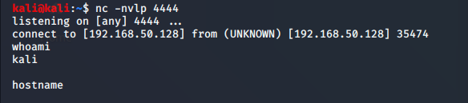

most common shell is reverse shell:shell is basically access to a machine
Reverse shell: Victim conncets to us so basically we are gonna listen(used 95% times)
Bind shell:We open up a port on victim and we conncet to it(the target). (used in external assessments)(used to bypass firewalls)
Reverse Shell :
Attacker

Victim

--------------------------------------------------------------------------------------------------------------------------------------------------------
Bind Shell
Attacker

VIctim

Although in both cases shell toh always victim has to hi supply
-------------------------------------------------------------------------------------------------------------------------------------------------------------